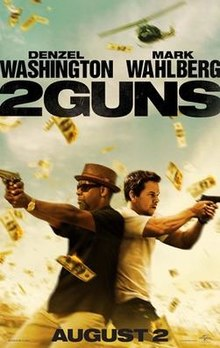

Categories
My Favourite Action Movies
2 Guns
Criminals Robert "Bobby" Beans (Denzel Washington) and Michael "Stig" Stigman (Mark Wahlberg) are questioned by the United States Border Patrol after a meeting with drug lord Manny "Papi" Greco (Edward James Olmos) in Mexico. Unknown to Stig, Bobby is an undercover DEA agent named Bobby Trench and reports to his superior, Jessup (Robert John Burke), that he failed to acquire cocaine from Papi that they could use as evidence to convict him.
Against Jessup's orders, Bobby decides to remain undercover and assist Stig in robbing $3 million - stashed in the vault of the Tres Cruces bank - from Papi, so they can prosecute Papi for money laundering. Bobby has a rendezvous with fellow DEA agent and former lover, Deb Rees (Paula Patton), who is also seeing another man, while Stig, an undercover enlisted Intelligence Specialist with the Navy SEALs, meets with his commanding officer, LCDR Harold Quince (James Marsden), who instructs Stig to kill Bobby so the Navy can use the stolen money to fund unauthorized covert operations.
During the heist, Bobby and Stig are surprised to find $43.125 million in the vault instead of the expected $3M. After the heist, Stig follows orders to betray Bobby and escape with the money, managing to pull his gun right as Bobby is about to pull his own. Unwilling to kill Bobby, Stig wounds Bobby in the shoulder, and then sees Bobby's DEA badge. Not sure what to think of Bobby, he leaves Bobby behind in the desert and leaves with the money. Stig meets with Quince, and after learning what happened, Quince attempts to have Stig killed. Stig escapes after learning the money will be transferred to a Navy base in Corpus Christi. Meanwhile, a man named Earl (Bill Paxton) aggressively interrogates the Tres Cruces bank manager about the stolen money and also questions the vet who treated Bobby's wounds as he tracks Bobby's movements.
However, Bobby goes to Stig's apartment to find out where he took the money, only to have Stig contact him from a sniper's post across the street. A hit squad sent by Quince attacks the apartment but Bobby and Stig escape. Bobby visits Jessup to tell him what happened, but Earl and his men are there waiting for him. Earl kills Jessup, frames Bobby for the murder and lets him go, making a deal that if Bobby returns the $43 million he will be cleared.
Bobby and Stig kidnap Papi and interrogate him in the garage at Deb's house. They find out Earl is a black ops operative to whom Papi reports, and that the money they stole was from payments to the CIA. The CIA has strong armed Papi, as well as other cartels, into paying a 7% cut in exchange for using CIA planes to help smuggle product across the Border. The garage is attacked by another hit squad, led by Quince. Bobby, Stig, and Deb escape, but so does Papi, who calls his crew. All three end up being captured by Papi, and taken to his farm in Mexico. After beating them and receiving a visit from Earl, Papi gives the pair 24 hours to steal the money from the Navy and return it to him, or Deb will die.
At the base, Bobby infiltrates Quince's office, only to discover Quince is Deb's boyfriend, and they had planned to steal the money for themselves. Meanwhile, Stig asks Admiral Tuway (Fred Ward) for help. Tuway orders Quince's arrest, but disavows Stig to prevent the scandal from tarnishing the Navy's reputation. Quince evades arrest, as does Stig. Unable to find the money, Bobby is too late to prevent Papi from killing Deb. He later realizes that the money is in a motel room that he and Deb frequented and goes to help Stig, who had returned to Papi's farm alone to exact vengeance.
There, Stig is surrounded by Papi's men until both Quince and Earl intervene. Bobby arrives in a car filled with money, and then blows up the car, scattering the money everywhere, which leads to a massive shootout. During a standoff among Quince, Earl, Bobby, and Stig, Earl reveals that the CIA has 20 other secret banks, and the loss of the $43.125 million is only a minor setback. Signaling Stig with a phrase from an earlier conversation, Stig shoots Earl, and Bobby shoots Quince. Bobby and Stig kill Papi and the duo escapes, but not before Bobby shoots Stig in the leg as payback for shooting him in the desert. While planning to continue to take down the CIA's secret banks and sabotage their black operations, Bobby reveals to Stig that he did not blow up all the money and had some stashed away.
Mad Max Fury Road

Following a resource crisis and subsequent wars, the world has become a desert wasteland and civilization has collapsed. Max Rockatansky, a survivor haunted by visions of his deceased family, is captured by the War Boys, the army of the tyrannical Immortan Joe, and taken to Joe's Citadel. Designated a universal blood donor, Max is imprisoned and used as a "blood bag" for a sick War Boy called Nux. Meanwhile, Imperator Furiosa, one of Joe's lieutenants, is sent in her armoured semi-truck, the "War Rig", to collect gasoline and ammunition. When she drives off-route, Joe realizes that his five wives—women selected for breeding—are missing, and are fleeing with her. Joe leads his entire army in pursuit of Furiosa, calling on the aid of nearby Gas Town and the Bullet Farm.
Nux joins the pursuit with Max strapped to his car, and a battle ensues between the War Rig and Joe's forces. Furiosa drives into a sand storm, evading her pursuers, except Nux, who attempts to sacrifice himself to destroy the Rig. Max escapes and restrains Nux, but the car is destroyed. After the storm, Max finds Furiosa repairing the Rig, accompanied by the wives: Capable, Cheedo, Toast, the Dag, and the Splendid Angharad, who is heavily pregnant with Joe's child. Max steals the Rig, but Furiosa activates a kill switch to disable it. As Furiosa is the only one who knows the correct combination to restart the Rig, Max reluctantly agrees to let her and the wives accompany him; Nux climbs on the Rig as it leaves and attempts to kill Furiosa, but is overcome and thrown out, and is picked up by Joe's army.
Furiosa drives through a biker gang-controlled canyon, having bartered a deal for safe passage. However, with Joe's forces pursuing, the gang turns on her, forcing her and the group to flee, while the bikers detonate the canyon walls to block Joe. Max and Furiosa fight pursuing bikers as Joe's car, with Nux now on board, breaks through the blockade and eventually attacks the War Rig, allowing Nux to board and once again attempts to attack Furiosa, but fails and falls to the disappointment of Joe. However, as the Rig escapes, Angharad also falls off trying to help Max and is run over by Joe's car, killing her and her child. Furiosa explains to Max that they are escaping to the "Green Place", an idyllic land she remembers from her childhood. Capable finds Nux hiding in the Rig, distraught over his failure, and consoles him. That night, the Rig gets stuck in mud. Furiosa and Max slow Joe's forces with mines, but Joe's ally, the Bullet Farmer, continues pursuing them. Nux helps Max free the Rig while Furiosa shoots and blinds the Bullet Farmer. Max walks into the dark to confront the Bullet Farmer and his men, wordlessly returning with guns and ammunition and covered in blood.
They drive the War Rig overnight through swampland and desert, coming across a naked woman the next day. Max suspects a trap, though Furiosa approaches the woman and states her history and clan affiliation. The naked woman summons her clan, the Vuvalini, who recognize Furiosa as one of their own who was kidnapped as a child. Furiosa is devastated to learn that the swampland they passed was indeed the Green Place, now uninhabitable. The group then plans to ride motorbikes across immense salt flats in the hope of finding a new home. Max chooses to stay behind, but after seeing visions of the child he failed to save, he convinces them to return to the undefended Citadel, which has ample water and greenery that Joe keeps for himself, and to trap Joe and his army in the bikers' canyon.
The group heads back towards the Citadel, but Joe's forces attack them en route, seriously wounding Furiosa. Joe positions his car in front of the War Rig to slow it, while Max fights Joe's giant son, Rictus Erectus. Joe captures Toast, who manages to distract him long enough for Furiosa to kill him. Nux sacrifices himself by wrecking the Rig, killing Rictus and blocking the canyon, allowing Max, Furiosa, the wives, and the surviving Vuvalini to escape in Joe's car, where Max transfuses his blood to Furiosa, saving her life.
At the Citadel, the impoverished citizens react to Joe's death with joy. Furiosa, the wives, and the Vuvalini are cheered by the people and welcomed by the remaining War Boys. Max shares a respectful glance with Furiosa before blending into the crowd and departing for parts unknown.
| © Yafet Lulseged, 2020 | You're looking great today. |